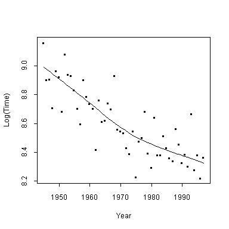

| / Home |
Keywords: regression, non-parametric regression.
The Sydney-Hobart yacht race starts from Sydney Harbour on Boxing day (December 26) and finishes several days later in Hobart. It is a 630 nautical mile ocean race. The data give the winning times from 1945 to 1993, as they appeared in the Sydney Morning Herald on 24 December, 1994, plus the winning times for 1994 to 1997.
| Variable | Description | ||
| Yacht | Name of winning yacht | ||
| Year | Year | ||
| Days | Days unit of winning time | ||
| Hours | Hours unit of winning time | ||
| Minutes | Minutes unit of winning time | ||
| Time | Winning time in minutes (should match time in Days, Hours and Minutes) | ||
See the View Point site for photography of the race.
Data file (tab-delimited text)
| Sydney Morning Herald of 24 December 1994. |
| Case Studies in Statistics, Department of Mathematics and Statistics, University of Melbourne. |
| 1995 and later results collected by Gordon Smyth from Telstra and Sydney Morning Herald news bulletins. |
The winning time varies quite a bit due to weather and improvements. There has been an improvement over time in boat design and sailing techniques. The plot below includes the loess curve.
The 1966 winning time as published by the Sydney Morning Herald is an error, as it does not match with the days, hours and minutes. I have taken the day, hours and minutes to be correct.

|
Home - About Us -
Contact Us Copyright © Gordon Smyth |